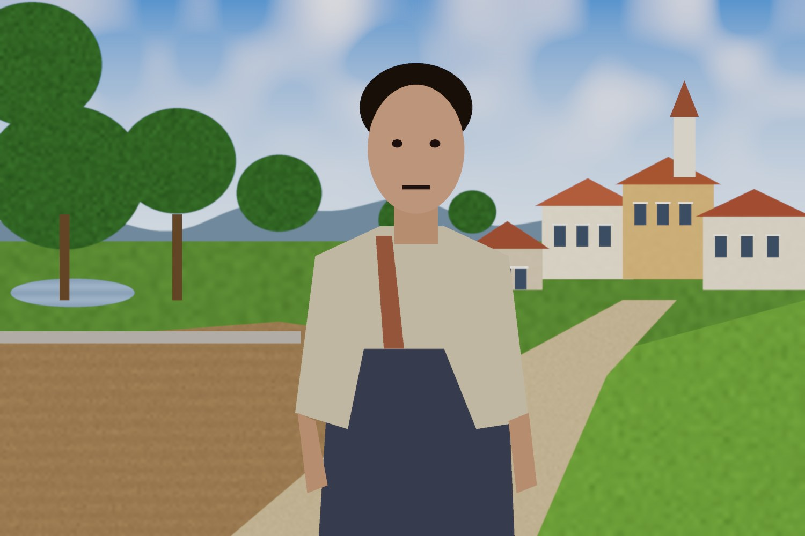
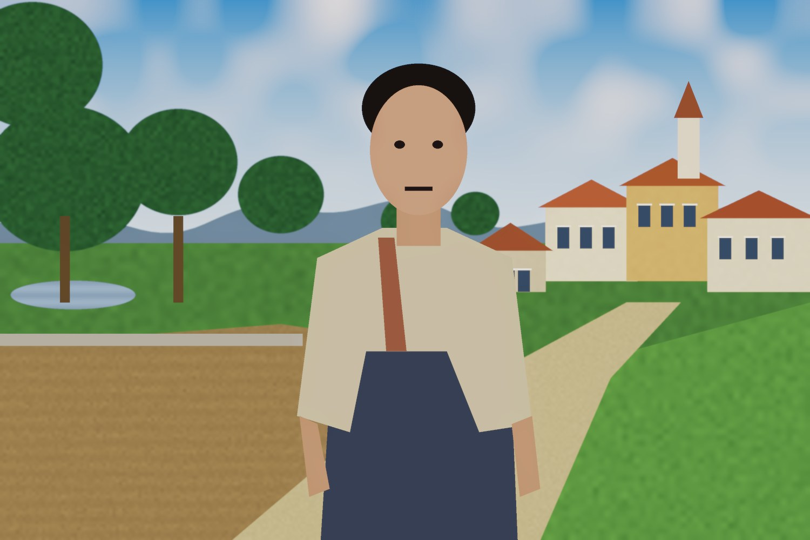
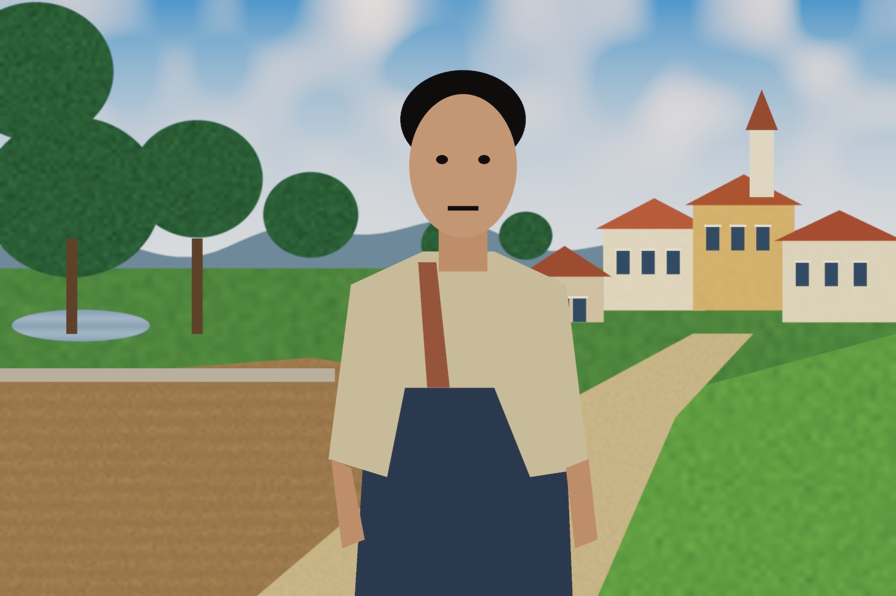

Reference Grade · before and after
The values are illustrative; no fit was run. The photo and the reference are drawings (no photograph, no film still, nobody’s likeness). The result is the maths of docs/34 §3, §4 and §4a applied by rg_ref.py with values chosen by hand, through soft masks taken from the drawing’s own element layers. The display transform is a simple filmic curve and the sRGB encoding, not the product’s.




Values used (illustrative)
| Global | luma toe −0.35 stop, red and blue curves, saturation −6 |
|---|---|
| Hue vs hue | 120° +12°, 240° −10°, the others within ±6° |
| Hue vs saturation | 60° ×1.15, 120° ×0.85, 240° ×1.12 |
| Sky | −0.30 EV · −8° · 115 % |
| Vegetation | −0.10 EV · +12° · 80 % |
| Ground | +0.10 EV · +8° · 110 % |
| Built | 0 EV · +6° · 110 % |
| Skin | +0.10 EV · +3° · 100 % |
| Subject | +0.20 EV |
| Water | left at the identity: under 2 % of the photo |